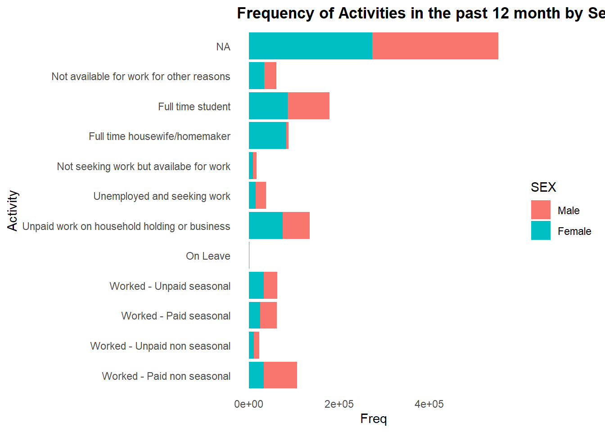
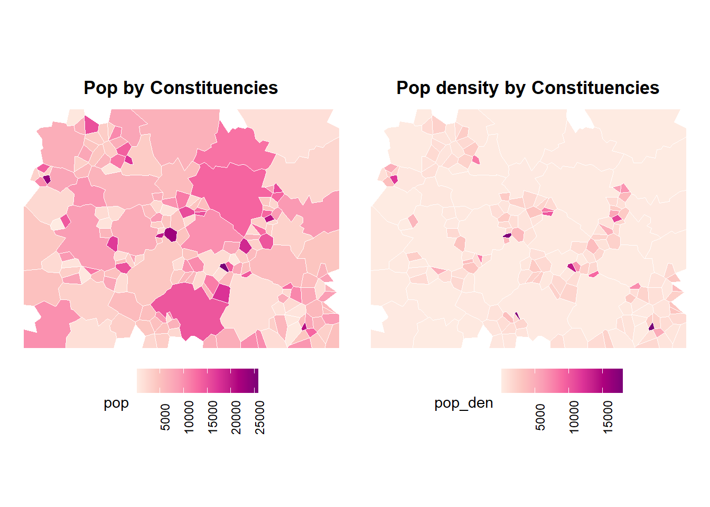

if(!require("pacman"))
install.packages("pacman")
pacman::p_load(tidyverse,
# Collection of R packages for data manipulation, visualization, and analysis (includes dplyr, ggplot2, tidyr, readr, etc.)
haven,
# Import and export data from statistical software formats (e.g., SPSS, Stata, SAS)
forcats,
# Tools for working with categorical variables (factors), especially useful for ordering and releveling
gt,
# Create beautiful, publication-ready tables directly from R
sf,
# Handle spatial vector data using 'Simple Features' standard (shapefiles, GeoJSON, etc.)
ggrepel,
# Prevent overlapping text labels in ggplot2 graphics by intelligently repositioning them
patchwork,
# Combine multiple ggplot2 plots into one layout (side-by-side, stacked, etc.)
knitr,
# Report generation engine to create dynamic documents (e.g., RMarkdown to PDF/HTML/Word)
openxlsx # Read/write Excel files without Java dependency; supports styles, formatting, and worksheets
)APPLICATION OF DEGURBA TO MICRO-CENSUS DATA
INTRODUCTION
This R markdown template will take through computation of some SDG 3, 5 and 8 key indicators namely;
SDG Indicator 3.7.2: Adolescent birth rate (aged 10–14 years; aged 15–19 years) per 1,000 women in that age group.
SDG INDICATOR 5.3.1: Proportion of women aged 20–24 years who were married or in a union before age 15 and before age 18.
SDG INDICATOR 8.6.1: Proportion of youth (aged 15-24 years) not in education, employment or training.
LOAD LIBRARIES
if (knitr::is_latex_output()) {
# redefine how gt tables are printed for PDF
knit_print.gt_tbl <- function(x, ...) {
knitr::asis_output(
paste0("\\begin{landscape}\n",
as.character(gt::as_latex(x)),
"\n\\end{landscape}\n")
)
}
# register it
knit_hooks$set(gt_tbl = knit_print.gt_tbl)
}LOAD DATA
This is dummy data prepared by UNFPA for the purpose of training on SDG indicators disaggregation by DEGURBA.
a) Dummy Micro-census data
demographics <- haven::read_sav("Output/dummy_microcensus_final.sav")b) Dummy constituency data with DEGURBA classifications
constituency_shape <- sf::read_sf("D:\\UNFPA\\DEGURBA_Paraguay\\data_prep\\Output\\TUC_poly\\poly_dummy_mw_pop_GHS-DU-TUC.shp")c) Dummy GPS points data with DEGURBA classifications
gps_shape <- sf::read_sf("D:\\UNFPA\\DEGURBA_Paraguay\\data_prep\\Output\\TUC\\point_dummy_mw_popcount_new_GHS-DU-TUC.shp")DATA DESCRIPTION & EXPLORATION
Description
There are two main datasets used in this exercise.
demographics : This is dummy data with 1,321,973 records and 13 variables. This will be used to compute the SDG indicators using variables such as age, sex, activity in the past 12 months, child bird in the past 12 months and constituency.
constituency_shape : Dummy polygon boundaries prepared by EU-JRC for DEGURBA trainings and re-adapted by UNFPA. The file contains 190 records and 28 variables including information on the DEGURBA classification. This will be used to map the SDG indicators computed from the dummy micro-census data and then later to disaggregated by DEGURBA.
gps_shape: Dummy point data prepared by EU-JRC for DEGURBA trainings and re-adapted by UNFPA. The file contains 15,200 records wih 6 variables including DEGURBA classifications. This will be used to classify individual records in the dummy micro-census data.
Exploration
In this section, we are exploring the key variables that will be used in this exercise. These variables are
- SEX = Sex
# Sex unique values
demographics$SEX |> str() dbl+lbl [1:1321973] 2, 2, 2, 2, 1, 2, 2, 1, 2, 2, 2, 2, 1, 1, 2, 1, 1, 1, ...
@ label : chr "Sex"
@ format.spss : chr "F1.0"
@ display_width: int 10
@ labels : Named num [1:2] 1 2
..- attr(*, "names")= chr [1:2] "Male" "Female"# Sex distribution
demographics |>
mutate(SEX = as_factor(SEX)) |>
dplyr::group_by(SEX) |>
count(name = "Freq") |>
tibble::tibble() |>
ggplot2::ggplot() +
ggplot2::geom_bar(aes(x = SEX, fill = SEX, y = Freq),
stat = "identity") +
ggplot2::labs(title = "Sex Distribution") +
ggplot2::theme_minimal() +
ggplot2::theme(
plot.title = element_text(face = "bold", hjust = 0.5)
)ggplot2::ggsave(filename = "Output/visuals/sex_dist.png")Saving 7 x 5 in image- AGE = Age
# Age distribution by Sex
demographics |>
mutate(
sex_label = factor(SEX, levels = c(1, 2), labels = c("Male", "Female")),
age_group = case_when(
AGE <= 4 ~ "0-4",
between(AGE, 5, 9) ~ "5-9",
between(AGE, 10, 14) ~ "10-14",
between(AGE, 15, 19) ~ "15-19",
between(AGE, 20, 24) ~ "20-24",
between(AGE, 25, 29) ~ "25-29",
between(AGE, 30, 34) ~ "30-34",
between(AGE, 35, 39) ~ "35-39",
between(AGE, 40, 44) ~ "40-44",
between(AGE, 45, 49) ~ "45-49",
between(AGE, 50, 54) ~ "50-54",
between(AGE, 55, 59) ~ "55-59",
between(AGE, 60, 64) ~ "60-64",
between(AGE, 65, 69) ~ "65-69",
between(AGE, 70, 74) ~ "70-74",
between(AGE, 75, 79) ~ "75-79",
AGE >= 80 ~ "80+",
TRUE ~ "NA"
),
age_group = factor(age_group, levels = c(
"0-4", "5-9", "10-14", "15-19", "20-24", "25-29", "30-34",
"35-39", "40-44", "45-49", "50-54", "55-59", "60-64",
"65-69", "70-74", "75-79", "80+", "NA"
))
) |>
group_by(sex_label, age_group) |>
summarise(pop_count = n() / 10000, .groups = "drop") |>
mutate(
pop_count = ifelse(sex_label == "Male", -pop_count, pop_count)
) |>
ggplot(aes(x = pop_count, y = age_group, fill = sex_label)) +
geom_bar(stat = "identity", width = 0.9, color = "white") +
scale_x_continuous(labels = abs, name = "Population Count (million)") +
labs(
title = "Age - Sex Distribution",
y = "Age",
fill = "Sex"
) +
theme_minimal() +
theme(
panel.grid = element_blank(),
plot.title = element_text(face = "bold", hjust = 0.5)
)ggplot2::ggsave(filename = "Output/visuals/age_sex_pyramid.png")Saving 7 x 5 in image- BIRTH_LAST_12_MON= Live births in the past 12 months
# Unique values
demographics$BIRTH_LAST_12_MON|> str() dbl+lbl [1:1321973] 2, 2, 2, 2, NA, 2, 2, NA, 2, 2, 2, 2, NA, NA...
@ label : chr "Any live births in last 12 months?"
@ format.spss : chr "F1.0"
@ display_width: int 19
@ labels : Named num [1:2] 1 2
..- attr(*, "names")= chr [1:2] "Yes" "No"# distribution of live births in females
demographics |>
dplyr::filter(SEX == 2) |>
mutate(BIRTH_LAST_12_MON= as_factor(BIRTH_LAST_12_MON)) |>
dplyr::group_by(BIRTH_LAST_12_MON) |>
count(name = "Freq") |>
tibble::tibble() |>
ggplot2::ggplot() +
ggplot2::geom_bar(aes(x = BIRTH_LAST_12_MON, fill = BIRTH_LAST_12_MON, y = Freq),
stat = "identity") +
ggplot2::labs(title = "Distribution of Live Births in the past 12 Months") +
ggplot2::theme_minimal() +
ggplot2::theme(
plot.title = element_text(face = "bold", hjust = 0.5)
)ggplot2::ggsave(filename = "output/visuals/birth_distribution.png")Saving 7 x 5 in image- ACTIVITY_LAST_12_MON = Activity in the last 12 months
# Unique Activities
demographics$ACTIVITY_LAST_12_MON |> unique()<labelled<double>[12]>: Activity last twelve months
[1] NA 7 10 2 8 9 4 6 11 3 1 5
Labels:
value label
1 Worked - Paid non seasonal
2 Worked - Unpaid non seasonal
3 Worked - Paid seasonal
4 Worked - Unpaid seasonal
5 On Leave
6 Unpaid work on household holding or business
7 Unemployed and seeking work
8 Not seeking work but availabe for work
9 Full time housewife/homemaker
10 Full time student
11 Not available for work for other reasons# activity distribution
demographics |>
mutate(ACTIVITY_LAST_12_MON = as_factor(ACTIVITY_LAST_12_MON),
SEX = as_factor(SEX)
) |>
dplyr::group_by(ACTIVITY_LAST_12_MON, SEX) |>
count(name = "Freq") |>
ggplot2::ggplot() +
ggplot2::geom_bar(aes(y = ACTIVITY_LAST_12_MON,
fill = SEX,
x = Freq),
stat = "identity") +
ggplot2::theme_minimal() +
ggplot2::theme(
panel.grid = element_blank()
) +
ggplot2::labs(
title = "Frequency of Activities in the past 12 month by Sex",
y = "Activity"
) +
ggplot2::theme(
plot.title = element_text(face = "bold")
)
ggplot2::ggsave(filename = "output/visuals/activities_dist.png")Saving 7 x 5 in image- CONSTITUENCY = Constituency
# pop by constituency
pop_by_consti <-
demographics |>
dplyr::group_by(CONSTITUENCY) |>
dplyr::summarise(
pop = n()
)
# merge with shape
new_consti <-
constituency_shape |>
dplyr::left_join(
pop_by_consti,
by = c("id" = "CONSTITUENCY")
) |>
dplyr::mutate(
area_m2 = sf::st_area(geometry) |> as.double(),
pop_den = (pop / area_m2)*1000000
)
# map by pop
A <- new_consti |>
ggplot2::ggplot() +
ggplot2::geom_sf(aes(fill = pop), color = "white") +
ggplot2::scale_fill_distiller(palette = "RdPu", direction = 1) +
ggplot2::labs(title = "Pop by Constituencies") +
ggplot2::theme_void() +
ggplot2::theme(
plot.title = element_text(face = "bold", hjust = 0.5),
legend.position = "bottom",
legend.text = element_text(angle = 90)
)
# map by pop den
B <- new_consti |>
ggplot2::ggplot() +
ggplot2::geom_sf(aes(fill = pop_den), color = "white") +
ggplot2::scale_fill_distiller(palette = "RdPu", direction = 1) +
ggplot2::labs(title = "Pop density by Constituencies") +
ggplot2::theme_void() +
ggplot2::theme(
plot.title = element_text(face = "bold", hjust = 0.5),
legend.position = "bottom",
legend.text = element_text(angle = 90)
)
A + B
ggplot2::ggsave(filename = "output/visuals/pop_dist.png")Saving 7 x 5 in imageSUSTAINABLE DEVELOPMENT GOALS (SDG) CALCULATION AND DISAGGREGATION BY DEGURBA FROM POLYGONS CLASSIFICATION
SDG 3 : Good Health and Well Being
SDG TARGET 3.7: By 2030, ensure universal access to sexual and reproductive health-care services, including for family planning, information and education, and the integration of reproductive health into national strategies and programmes.
SDG Indicator 3.7.2: Adolescent birth rate (aged 10–14 years; aged 15–19 years) per 1,000 women in that age group
The adolescent birth rate for 10–14 years is calculated as
\[ \text{Adolescent Birth Rate}_{10\text{--}14} = \left( \frac{B_{10\text{--}14}}{P_{10\text{--}14}} \right) \times 1000 \]
and for 15–19 years:
\[ \text{Adolescent Birth Rate}_{15\text{--}19} = \left( \frac{B_{15\text{--}19}}{P_{15\text{--}19}} \right) \times 1000 \]
where:
- \(B_{10\text{--}14}\) = Number of women aged 10–14 with live birth in the past 12 months
- \(P_{10\text{--}14}\) = Total number of women aged 10–14
- \(B_{15\text{--}19}\) = Number of women aged 15–19 with live birth in the past 12 months
- \(P_{15\text{--}19}\) = Total number of women aged 15–19
Input Variables Definition:
SEX = Sex
AGE = Age
BIRTH_LAST_12_MON= Live births in the past 12 months
CONSTITUENCY = Constituency (Admin 4)
Output Variables Definition:
total.ado.10_14 = Total female adolescents aged 10 to 14
total.ado.15_19 = Total female adolescents aged 15 to 19
total.ado.birth.10_14 = Total female adolescents aged 10 to 14 with live birth in the past 12 months
total.ado.birth.15_19 = Total female adolescents aged 15 to 19 with live birth in the past 12 months
abr.10_14 = Adolescent aged 10 to 14 birth rate
abr.15_19 = Adolescent aged 15 to 19 birth rate
Global Target :
Methodology:
1- Filter the Sex to Female by using the SEX == 2
2- Group by the constituency
3- Compute summary statistics
Adolescent Birth Rate by Constituency
adolescent_birth_rate <-
demographics |>
dplyr::filter(SEX == 2) |>
dplyr::group_by(CONSTITUENCY) |>
dplyr::summarise(
total.ado.10_14 = sum(dplyr::between(AGE, 10, 14), na.rm = TRUE),
total.ado.15_19 = sum(dplyr::between(AGE, 15, 19), na.rm = TRUE),
total.ado.birth.10_14 = sum(dplyr::between(AGE, 10, 14) &
BIRTH_LAST_12_MON== 1, na.rm = TRUE),
total.ado.birth.15_19 = sum(dplyr::between(AGE, 15, 19) &
BIRTH_LAST_12_MON== 1, na.rm = TRUE),
abr.10_14 = round((total.ado.birth.10_14 / total.ado.10_14) * 1000,2),
abr.15_19 = round((total.ado.birth.15_19 / total.ado.15_19) * 1000,2)
) |>
dplyr::select(
CONSTITUENCY,
everything()
)
# Print table
adolescent_birth_rate |>
head() |>
gt::gt()| Constituency | total.ado.10_14 | total.ado.15_19 | total.ado.birth.10_14 | total.ado.birth.15_19 | abr.10_14 | abr.15_19 |
|---|---|---|---|---|---|---|
| 0 | 614 | 755 | 5 | 65 | 8.14 | 86.09 |
| 1 | 548 | 272 | 0 | 9 | 0.00 | 33.09 |
| 2 | 176 | 212 | 0 | 7 | 0.00 | 33.02 |
| 3 | 396 | 316 | 2 | 23 | 5.05 | 72.78 |
| 4 | 985 | 1065 | 2 | 32 | 2.03 | 30.05 |
| 5 | 1325 | 1105 | 5 | 31 | 3.77 | 28.05 |
Visualization
constituency_shape |>
dplyr::select(id, geometry) |>
dplyr::left_join(
adolescent_birth_rate,
by = c("id" = "CONSTITUENCY")
) |>
tidyr::pivot_longer(
cols = c("abr.10_14", "abr.15_19"),
names_to = "abr_cat",
values_to = "abr_rate"
) |>
ggplot2::ggplot() +
ggplot2::geom_sf(aes(fill = abr_rate), color = "white") +
ggplot2::scale_fill_distiller(palette = "RdPu", direction = 1) +
ggplot2::theme_void() +
ggplot2::labs(title = "Adolescent Birth Rate per 1000") +
ggplot2::theme(
legend.position = "bottom",
legend.text = element_text(angle = 90),
plot.title = element_text(face = "bold", hjust = 0.5)
) +
ggplot2::facet_grid(~abr_cat)ggplot2::ggsave(filename = "output/visuals/adolescent_birth_rate.png")Saving 7 x 5 in imageSDG 5 : GENDER EQUALITY
SDG TARGET 5.3 : Eliminate all harmful practices, such as child, early and forced marriage and female genital mutilations
SDG INDICATOR 5.3.1: Proportion of women aged 20–24 years who were married or in a union before age 15 and before age 18
The child marriage indicator before age 15 is calculated as
\[ \text{Child Marriage}_{<15} = \left( \frac{M_{<15}}{W_{20\text{--}24}} \right) \times 100 \]
and before age 18 as
\[ \text{Child Marriage}_{<18} = \left( \frac{M_{<18}}{W_{20\text{--}24}} \right) \times 100 \]
where:
- \(M_{<15}\) = Number of women aged 20–24 married before age 15
- \(M_{<18}\) = Number of women aged 20–24 married before age 18
- \(W_{20\text{--}24}\) = Total number of women aged 20–24
Input Variables Definition:
SEX = Sex (1 - Male, 2 - Female)
AGE = Age
CONSTITUENCY = Constituency
Output Variable Definition:
total.girls.20_24 = Total number of females aged 20 to 24
married.before.15 = Total number of females married before 15
married.before.18 = Total number of females married before 18
prop.cm.before.15 = Proportion of child marriages before 15
prop.cm.before.18 = Proportion of child marriages before 18
Child Marriage by Constituency
child_marriage <-
demographics |>
dplyr::filter(AGE >= 20, AGE <= 24, SEX == 2) |>
dplyr::group_by(CONSTITUENCY) |>
dplyr::summarise(
total.girls.20_24 = n(),
married.before.15 = sum(AGE_FIRST_MARRIAGE < 15, na.rm = T),
married.before.18 = sum(AGE_FIRST_MARRIAGE < 18, na.rm = T),
prop.cm.before.15 = round(married.before.15 / total.girls.20_24, 2),
prop.cm.before.18 = round(married.before.18 / total.girls.20_24, 2)
) |>
dplyr::select(
CONSTITUENCY,
everything()
)
# print table
child_marriage |>
head() |>
gt::gt()| Constituency | total.girls.20_24 | married.before.15 | married.before.18 | prop.cm.before.15 | prop.cm.before.18 |
|---|---|---|---|---|---|
| 0 | 613 | 26 | 179 | 0.04 | 0.29 |
| 1 | 175 | 19 | 66 | 0.11 | 0.38 |
| 2 | 110 | 1 | 15 | 0.01 | 0.14 |
| 3 | 239 | 3 | 55 | 0.01 | 0.23 |
| 4 | 501 | 0 | 10 | 0.00 | 0.02 |
| 5 | 503 | 8 | 22 | 0.02 | 0.04 |
Visualization
constituency_shape |>
dplyr::select(id, geometry) |>
dplyr::left_join(
child_marriage,
by = c("id" = "CONSTITUENCY")
) |>
tidyr::pivot_longer(
cols = c("prop.cm.before.15", "prop.cm.before.18"),
names_to = "child_marriage",
values_to = "cm_rate"
) |>
ggplot2::ggplot() +
ggplot2::geom_sf(aes(fill = cm_rate), color = "white") +
ggplot2::scale_fill_distiller(palette = "RdPu", direction = 1) +
ggplot2::theme_void() +
ggplot2::labs(title = "Child Marriage") +
ggplot2::theme(
legend.position = "bottom",
legend.text = element_text(angle = 90),
plot.title = element_text(face = "bold", hjust = 0.5)
) +
ggplot2::facet_grid(~child_marriage)ggplot2::ggsave(filename = "output/visuals/child_marriage.png")Saving 7 x 5 in image SDG 8 : DECENT WORK AND ECONOMIC GROWTH
SDG 8 : DECENT WORK AND ECONOMIC GROWTH
SDG TARGET 8.6 : By 2020, substantially reduce the proportion of youth not in employment, education or training
SDG INDICATOR 8.6.1: Proportion of youth (aged 15-24 years) not in education, employment or training
The NEET rate is calculated as
\[ \text{NEET Rate} = \left( \frac{Y - E - T}{Y} \right) \times 100 \]
where:
- \(Y\) = Total number of youth aged 15–24
- \(E\) = Youth in employment
- \(T\) = Youth not in employment but in education or training
Input Variables Definition :
ACTIVITY_LAST_12_MON = Activity in the last 12 months
AGE = Age
CONSTITUENCY = Constituency (Admin 4)
Output Variables Definition :
total.youth.15_24 = Total number of people aged 15 to 24 (Youth)
total.neet = Number of youths not employed, not in education or training
rate.need = proportion of youths not employed, not in education or training
Youth Unemployment by Constituency & Sex
youth_umemplyment <-
demographics |>
dplyr::mutate(
Employ = case_when(
ACTIVITY_LAST_12_MON %in% 1:6 ~ 1,
ACTIVITY_LAST_12_MON %in% 7:9 ~ 2,
ACTIVITY_LAST_12_MON == 10 ~ 3,
T ~ 2
)
) |>
dplyr::filter(AGE >= 15, AGE <= 24) |>
dplyr::group_by(CONSTITUENCY, SEX) |>
summarise(
total.youth.15_24 = n(),
total.neet = sum(Employ == 2, na.rm = TRUE),
rate.neet = round(total.neet / total.youth.15_24, 2)
) |>
dplyr::mutate(
SEX = forcats::as_factor(SEX)
) |>
dplyr::select(
CONSTITUENCY,
everything()
) |>
tidyr::pivot_wider(
names_from = SEX,
values_from = 3:5
)
# print table
youth_umemplyment |>
tibble::tibble() |>
head() |>
gt::gt()| Constituency | total.youth.15_24_Male | total.youth.15_24_Female | total.neet_Male | total.neet_Female | rate.neet_Male | rate.neet_Female |
|---|---|---|---|---|---|---|
| 0 | 1521 | 1368 | 525 | 603 | 0.35 | 0.44 |
| 1 | 1802 | 447 | 477 | 191 | 0.26 | 0.43 |
| 2 | 955 | 322 | 36 | 13 | 0.04 | 0.04 |
| 3 | 379 | 555 | 106 | 238 | 0.28 | 0.43 |
| 4 | 824 | 1566 | 300 | 652 | 0.36 | 0.42 |
| 5 | 192 | 1608 | 67 | 577 | 0.35 | 0.36 |
Visualization
constituency_shape |>
dplyr::select(id, geometry) |>
dplyr::left_join(
youth_umemplyment,
by = c("id" = "CONSTITUENCY")
) |>
tidyr::pivot_longer(
cols = c("rate.neet_Male", "rate.neet_Female"),
names_to = "neet",
values_to = "neet_rate"
) |>
ggplot2::ggplot() +
ggplot2::geom_sf(aes(fill = neet_rate), color = "white") +
ggplot2::scale_fill_distiller(palette = "RdPu", direction = 1) +
ggplot2::theme_void() +
ggplot2::labs(title = "NEET") +
ggplot2::theme(
legend.position = "bottom",
legend.text = element_text(angle = 90),
plot.title = element_text(face = "bold", hjust = 0.5)
) +
ggplot2::facet_grid(~neet)ggplot2::ggsave(filename = "output/visuals/neet.png")Saving 7 x 5 in imageEXPORT RESULTS SDG RESULTS TO CSV
1- Merge all results into one data frame
indicators_df <-
child_marriage |>
dplyr::left_join(
adolescent_birth_rate,
by = c("CONSTITUENCY")
) |>
dplyr::left_join(
youth_umemplyment,
by = c("CONSTITUENCY")
)
# print table
indicators_df |>
head() |>
gt::gt()| Constituency | total.girls.20_24 | married.before.15 | married.before.18 | prop.cm.before.15 | prop.cm.before.18 | total.ado.10_14 | total.ado.15_19 | total.ado.birth.10_14 | total.ado.birth.15_19 | abr.10_14 | abr.15_19 | total.youth.15_24_Male | total.youth.15_24_Female | total.neet_Male | total.neet_Female | rate.neet_Male | rate.neet_Female |
|---|---|---|---|---|---|---|---|---|---|---|---|---|---|---|---|---|---|
| 0 | 613 | 26 | 179 | 0.04 | 0.29 | 614 | 755 | 5 | 65 | 8.14 | 86.09 | 1521 | 1368 | 525 | 603 | 0.35 | 0.44 |
| 1 | 175 | 19 | 66 | 0.11 | 0.38 | 548 | 272 | 0 | 9 | 0.00 | 33.09 | 1802 | 447 | 477 | 191 | 0.26 | 0.43 |
| 2 | 110 | 1 | 15 | 0.01 | 0.14 | 176 | 212 | 0 | 7 | 0.00 | 33.02 | 955 | 322 | 36 | 13 | 0.04 | 0.04 |
| 3 | 239 | 3 | 55 | 0.01 | 0.23 | 396 | 316 | 2 | 23 | 5.05 | 72.78 | 379 | 555 | 106 | 238 | 0.28 | 0.43 |
| 4 | 501 | 0 | 10 | 0.00 | 0.02 | 985 | 1065 | 2 | 32 | 2.03 | 30.05 | 824 | 1566 | 300 | 652 | 0.36 | 0.42 |
| 5 | 503 | 8 | 22 | 0.02 | 0.04 | 1325 | 1105 | 5 | 31 | 3.77 | 28.05 | 192 | 1608 | 67 | 577 | 0.35 | 0.36 |
2- Export the results into a CSV file for further analysis
readr::write_csv(x = indicators_df, file = "Output/indicators.csv")APPLICATION OF DEGURBA TO SDG INDICATORS IN USING POLYGON BOUNDARIES
In this section, we are Going to classify our admin data by DEGURBA classification generated from the application of the DEGURBA methodology.
Step 0: Classification of Constituencies by DEGURBA
# degurba level 1
degurba_l1 <- constituency_shape |>
dplyr::mutate(
DEGURBA_L1 = factor(DEGURBA_L1,
levels = c(1,2,3),
labels = c("Rural Area",
"Town or Semi-dense Area",
"City"
)
)
) |>
ggplot2::ggplot() +
ggplot2::geom_sf(aes(fill = DEGURBA_L1), color = "white") +
ggplot2::scale_fill_manual(
values = c("#73B273","#FFC000","red")
) +
ggplot2::theme_void() +
ggplot2::labs(title = "DEGURBA LEVEL 1") +
ggplot2::theme(
plot.title = element_text(face = "bold", hjust = 0.5),
#legend.position = "bottom"
)
# degurba level 2
degurba_l2 <- constituency_shape |>
dplyr::mutate(
DEGURBA_L2 = factor(DEGURBA_L2,
levels = c(12,13,21,22,23,30),
labels = c("Very Disperded Rural Area",
"Disperse Rural Area",
"Village",
"Suburban or Peri-urban Area",
"Dense Town",
"City"
)
)
) |>
ggplot2::ggplot() +
ggplot2::geom_sf(aes(fill = DEGURBA_L2), color = "white") +
ggplot2::scale_fill_manual(
values = c("#abcd66","#375623","#ffff00", "#a87000", "#732600", "red")
) +
ggplot2::theme_void() +
ggplot2::labs(title = "DEGURBA LEVEL 2") +
ggplot2::theme(
plot.title = element_text(face = "bold", hjust = 0.5),
#legend.position = "bottom"
)
# use patchwork to paste both plot side by side
degurba_l1 / degurba_l2ggplot2::ggsave(filename = "output/visuals/degurba_classification.png")Saving 7 x 5 in imageStep 1: Join the Constituency Shapes and The SDG Indicators
sdg_degurba <-
constituency_shape |>
dplyr::select(id, DEGURBA_L1, DEGURBA_L2) |>
dplyr::left_join(
indicators_df,
by = c("id" = "CONSTITUENCY")
) |>
tibble::as.tibble() |>
dplyr::select(-geometry)
# print table
sdg_degurba |>
head() |>
gt::gt()| id | DEGURBA_L1 | DEGURBA_L2 | total.girls.20_24 | married.before.15 | married.before.18 | prop.cm.before.15 | prop.cm.before.18 | total.ado.10_14 | total.ado.15_19 | total.ado.birth.10_14 | total.ado.birth.15_19 | abr.10_14 | abr.15_19 | total.youth.15_24_Male | total.youth.15_24_Female | total.neet_Male | total.neet_Female | rate.neet_Male | rate.neet_Female |
|---|---|---|---|---|---|---|---|---|---|---|---|---|---|---|---|---|---|---|---|
| 0 | 1 | 13 | 613 | 26 | 179 | 0.04 | 0.29 | 614 | 755 | 5 | 65 | 8.14 | 86.09 | 1521 | 1368 | 525 | 603 | 0.35 | 0.44 |
| 1 | 2 | 21 | 175 | 19 | 66 | 0.11 | 0.38 | 548 | 272 | 0 | 9 | 0.00 | 33.09 | 1802 | 447 | 477 | 191 | 0.26 | 0.43 |
| 2 | 3 | 30 | 110 | 1 | 15 | 0.01 | 0.14 | 176 | 212 | 0 | 7 | 0.00 | 33.02 | 955 | 322 | 36 | 13 | 0.04 | 0.04 |
| 3 | 2 | 21 | 239 | 3 | 55 | 0.01 | 0.23 | 396 | 316 | 2 | 23 | 5.05 | 72.78 | 379 | 555 | 106 | 238 | 0.28 | 0.43 |
| 4 | 2 | 21 | 501 | 0 | 10 | 0.00 | 0.02 | 985 | 1065 | 2 | 32 | 2.03 | 30.05 | 824 | 1566 | 300 | 652 | 0.36 | 0.42 |
| 5 | 2 | 21 | 503 | 8 | 22 | 0.02 | 0.04 | 1325 | 1105 | 5 | 31 | 3.77 | 28.05 | 192 | 1608 | 67 | 577 | 0.35 | 0.36 |
Step 2 : SDG disaggregation by DEGURBA
sdg_degurba_diss <-
sdg_degurba |>
tidyr::pivot_longer(
cols = c("DEGURBA_L1", "DEGURBA_L2"),
names_to = "degurba_level",
values_to = "degurba_class"
) |>
dplyr::group_by(degurba_level, degurba_class) |>
dplyr::summarise(
total.girls.20_24 = sum(total.girls.20_24, na.rm = T),
married.before.15 = sum(married.before.15, na.rm = T),
married.before.18 = sum(married.before.18, na.rm = T),
prop.cm.before.15 = round((married.before.15 / total.girls.20_24), 2),
prop.cm.before.18 = round((married.before.18 / total.girls.20_24), 2),
total.ado.10_14 = sum(total.ado.10_14, na.rm = T),
total.ado.15_19 = sum(total.ado.15_19, na.rm = T),
total.ado.birth.10_14 = sum(total.ado.birth.10_14, na.rm = T),
total.ado.birth.15_19 = sum(total.ado.birth.15_19, na.rm = T),
abr.10_14 = round((total.ado.birth.10_14/total.ado.10_14)*1000, 2),
abr.15_19 = round((total.ado.birth.15_19/total.ado.15_19)*1000, 2),
total.youth.15_24_Male = sum(total.youth.15_24_Male, na.rm = T),
total.youth.15_24_Female = sum(total.youth.15_24_Female, na.rm = T),
total.neet_Male = sum(total.neet_Male, na.rm = T),
total.neet_Female = sum(total.neet_Female, na.rm = T),
rate.neet_Male = round((total.neet_Male / total.youth.15_24_Male), 2),
rate.neet_Female = round((total.neet_Female / total.youth.15_24_Female), 2)
)
sdg_degurba_diss <-
sdg_degurba_diss |>
dplyr::mutate(
degurba_class = factor(degurba_class,
levels = c(1,2,3,12,13,21,22,23,30),
labels = c("Rural Area",
"Town or Semi-dense Area",
"City",
"Disperse Rural Area",
"Village",
"Suburban or Peri-urban Area",
"Semi-dense Town",
"Dense Town",
"city"
)
)
)Export Results in CSV
openxlsx::write.xlsx(x = sdg_degurba_diss,
sheetName = "disaggregated_indicators",
file = "output/disaggregated_indicators.xlsx")# Create a workbook and add a worksheet
wb <- openxlsx::createWorkbook()
openxlsx::addWorksheet(wb, "disaggregated_indicators")
# Write the data
openxlsx::writeData(wb, sheet = "disaggregated_indicators", x = sdg_degurba_diss)
# Create Styles
greenStyle <- openxlsx::createStyle(fgFill = "#73B273", halign = "center", valign = "center")
lgreenStyle <- openxlsx::createStyle(fgFill = "#cdf57a", halign = "center", valign = "center")
mgreenStyle <- openxlsx::createStyle(fgFill = "#abcd66", halign = "center", valign = "center")
dgreenStyle <- openxlsx::createStyle(fgFill = "#375623", halign = "center", valign = "center", fontColour = "white")
orangeStyle <- openxlsx::createStyle(fgFill = "#FFC000", halign = "center", valign = "center")
yellowStyle <- openxlsx::createStyle(fgFill = "#ffff00", halign = "center", valign = "center")
dredStyle <- openxlsx::createStyle(fgFill = "#732600", halign = "center", valign = "center", fontColour = "white")
redStyle <- openxlsx::createStyle(fgFill = "#FF0000", halign = "center", valign = "center")
# Apply the style to cells
openxlsx::addStyle(wb, sheet = "disaggregated_indicators", style = greenStyle, rows = 2, cols = 2, gridExpand = FALSE)
openxlsx::addStyle(wb, sheet = "disaggregated_indicators", style = orangeStyle, rows = 3, cols = 2, gridExpand = FALSE)
openxlsx::addStyle(wb, sheet = "disaggregated_indicators", style = redStyle, rows = 4, cols = 2, gridExpand = FALSE)
openxlsx::addStyle(wb, sheet = "disaggregated_indicators", style = lgreenStyle, rows = 5, cols = 2, gridExpand = FALSE)
openxlsx::addStyle(wb, sheet = "disaggregated_indicators", style = mgreenStyle, rows = 6, cols = 2, gridExpand = FALSE)
openxlsx::addStyle(wb, sheet = "disaggregated_indicators", style = dgreenStyle, rows = 7, cols = 2, gridExpand = FALSE)
openxlsx::addStyle(wb, sheet = "disaggregated_indicators", style = yellowStyle, rows = 8, cols = 2, gridExpand = FALSE)
openxlsx::addStyle(wb, sheet = "disaggregated_indicators", style = dredStyle, rows = 9, cols = 2, gridExpand = FALSE)
openxlsx::addStyle(wb, sheet = "disaggregated_indicators", style = redStyle, rows =10, cols = 2, gridExpand = FALSE)
# Merge Cells together
openxlsx::mergeCells(wb, sheet = "disaggregated_indicators", rows = 2:4, cols = 1)
openxlsx::mergeCells(wb, sheet = "disaggregated_indicators", rows = 5:10, cols = 1)
# Save the workbook
openxlsx::saveWorkbook(wb, file = "output/disaggregated_indicators.xlsx", overwrite = TRUE)Step 3: Visualization
# Adolescent Birth Rate
sdg_degurba_diss |>
tidyr::pivot_longer(
cols = c(abr.10_14, abr.15_19),
names_to = "cat",
values_to = "prop"
) |>
ggplot2::ggplot() +
ggplot2::geom_bar(aes(x = degurba_class, y = prop, fill = degurba_class), stat = "identity", show.legend = F) +
ggplot2::scale_fill_manual(
values = c("#73B273","#FFC000","red", "#cdf57a","#abcd66","#375623","#ffff00","#732600", "red")
) +
ggplot2::labs(
title = "Adolescent Birth Rate 10-14years and 15-19years",
y = "Birth Rate per 1000"
) +
ggplot2::theme() +
ggplot2::facet_grid(cat ~ degurba_level) +
theme_minimal() +
theme(
axis.text.x = element_blank(),
axis.title.x = element_blank(),
title = element_text(hjust = 0.5, face = "bold")
)ggplot2::ggsave(filename = "output/visuals/degurba_adolescent_birth_rate.png")Saving 7 x 5 in image# Child marriage
sdg_degurba_diss |>
dplyr::mutate(
prop.cm.before.15 = prop.cm.before.15*100,
prop.cm.before.18 = prop.cm.before.18*100
) |>
tidyr::pivot_longer(
cols = c(prop.cm.before.15, prop.cm.before.18),
names_to = "cat",
values_to = "prop"
) |>
ggplot2::ggplot() +
ggplot2::geom_bar(aes(x = degurba_class, y = prop, fill = degurba_class), stat = "identity", show.legend = F) +
ggplot2::scale_fill_manual(
values = c("#73B273","#FFC000","red", "#cdf57a","#abcd66","#375623","#ffff00","#732600", "red")
) +
ggplot2::labs(
title = "Child Marriage Before 15 & Before 18",
y = "Percentage (%)"
) +
ggplot2::theme() +
ggplot2::facet_grid(cat ~ degurba_level) +
theme_minimal() +
theme(
axis.text.x = element_blank(),
axis.title.x = element_blank(),
title = element_text(hjust = 0.5, face = "bold")
)ggplot2::ggsave(filename = "output/visuals/degurba_child_marriage.png")Saving 7 x 5 in image# NEET
sdg_degurba_diss |>
dplyr::mutate(
rate.neet_Male = rate.neet_Male*100,
rate.neet_Female = rate.neet_Female*100
) |>
tidyr::pivot_longer(
cols = c(rate.neet_Male, rate.neet_Female),
names_to = "cat",
values_to = "prop"
) |>
ggplot2::ggplot() +
ggplot2::geom_bar(aes(x = degurba_class, y = prop, fill = degurba_class), stat = "identity", show.legend = F) +
ggplot2::scale_fill_manual(
values = c("#73B273","#FFC000","red", "#cdf57a","#abcd66","#375623","#ffff00","#732600", "red")
) +
ggplot2::labs(
title = "Youth Unemployment (NEET)",
y = "Percentage (%)"
) +
ggplot2::theme() +
ggplot2::facet_grid(cat ~ degurba_level) +
theme_minimal() +
theme(
axis.text.x = element_blank(),
axis.title.x = element_blank(),
title = element_text(hjust = 0.5, face = "bold")
)ggplot2::ggsave(filename = "output/visuals/degurba_neet.png")Saving 7 x 5 in imageGT Table output
sdg_degurba_diss |>
gt::gt() |>
gt::tab_header(title = "SDG INDICATOR BY DEGURBA") |>
gt::data_color(
columns = c("prop.cm.before.15",
"prop.cm.before.18"
),
method = "numeric",
palette = "OrRd",
domain = c(min(sdg_degurba_diss$prop.cm.before.15),
max(sdg_degurba_diss$prop.cm.before.18))
) |>
gt::data_color(
columns = c("abr.10_14",
"abr.15_19"
),
method = "numeric",
palette = "OrRd",
domain = c(min(sdg_degurba_diss$abr.10_14),
max(sdg_degurba_diss$abr.15_19))
) |>
gt::data_color(
columns = c("rate.neet_Male",
"rate.neet_Female"
),
method = "numeric",
palette = "OrRd",
domain = c(min(sdg_degurba_diss$rate.neet_Male),
max(sdg_degurba_diss$rate.neet_Female))
) |>
tab_style(
style = list(
cell_fill(color = "#375623")
),
locations = cells_body(
columns = degurba_class,
rows = degurba_class %in% c("Rural Area", "Village")
)
) |>
tab_style(
style = list(
cell_fill(color = "#FFC000")
),
locations = cells_body(
columns = degurba_class,
rows = degurba_class == "Town or Semi-dense Area"
)
) |>
tab_style(
style = list(
cell_fill(color = "red")
),
locations = cells_body(
columns = degurba_class,
rows = degurba_class %in% c("City", "city")
)
) |>
tab_style(
style = list(
cell_fill(color = "#cdf57a")
),
locations = cells_body(
columns = degurba_class,
rows = degurba_class == "Very Disperded Rural Area"
)
) |>
tab_style(
style = list(
cell_fill(color = "#abcd66")
),
locations = cells_body(
columns = degurba_class,
rows = degurba_class == "Disperse Rural Area"
)
) |>
tab_style(
style = list(
cell_fill(color = "#ffff00")
),
locations = cells_body(
columns = degurba_class,
rows = degurba_class == "Suburban or Peri-urban Area"
)
) |>
tab_style(
style = list(
cell_fill(color = "#732600")
),
locations = cells_body(
columns = degurba_class,
rows = degurba_class == "Dense Town"
)
) |>
tab_style(
style = list(
cell_fill(color = "#a87000")
),
locations = cells_body(
columns = degurba_class,
rows = degurba_class == "Semi-dense Town"
)
)| SDG INDICATOR BY DEGURBA | |||||||||||||||||
|---|---|---|---|---|---|---|---|---|---|---|---|---|---|---|---|---|---|
| degurba_class | total.girls.20_24 | married.before.15 | married.before.18 | prop.cm.before.15 | prop.cm.before.18 | total.ado.10_14 | total.ado.15_19 | total.ado.birth.10_14 | total.ado.birth.15_19 | abr.10_14 | abr.15_19 | total.youth.15_24_Male | total.youth.15_24_Female | total.neet_Male | total.neet_Female | rate.neet_Male | rate.neet_Female |
| DEGURBA_L1 | |||||||||||||||||
| Rural Area | 1959 | 43 | 304 | 0.02 | 0.16 | 2806 | 2783 | 12 | 177 | 4.28 | 63.60 | 8147 | 4742 | 2433 | 1916 | 0.30 | 0.40 |
| Town or Semi-dense Area | 30121 | 1012 | 6169 | 0.03 | 0.20 | 48877 | 43142 | 115 | 2829 | 2.35 | 65.57 | 61441 | 73263 | 17914 | 26765 | 0.29 | 0.37 |
| City | 33089 | 1474 | 9569 | 0.04 | 0.29 | 38404 | 33288 | 77 | 3240 | 2.00 | 97.33 | 54156 | 66377 | 14493 | 28022 | 0.27 | 0.42 |
| DEGURBA_L2 | |||||||||||||||||
| Disperse Rural Area | 1052 | 17 | 112 | 0.02 | 0.11 | 1833 | 1667 | 5 | 90 | 2.73 | 53.99 | 5160 | 2719 | 1572 | 1135 | 0.30 | 0.42 |
| Village | 907 | 26 | 192 | 0.03 | 0.21 | 973 | 1116 | 7 | 87 | 7.19 | 77.96 | 2987 | 2023 | 861 | 781 | 0.29 | 0.39 |
| Suburban or Peri-urban Area | 9109 | 212 | 1211 | 0.02 | 0.13 | 13969 | 13710 | 32 | 537 | 2.29 | 39.17 | 18005 | 22819 | 5427 | 8133 | 0.30 | 0.36 |
| Semi-dense Town | 278 | 10 | 68 | 0.04 | 0.24 | 1336 | 854 | 4 | 35 | 2.99 | 40.98 | 611 | 1132 | 173 | 357 | 0.28 | 0.32 |
| Dense Town | 20734 | 790 | 4890 | 0.04 | 0.24 | 33572 | 28578 | 79 | 2257 | 2.35 | 78.98 | 42825 | 49312 | 12314 | 18275 | 0.29 | 0.37 |
| city | 33089 | 1474 | 9569 | 0.04 | 0.29 | 38404 | 33288 | 77 | 3240 | 2.00 | 97.33 | 54156 | 66377 | 14493 | 28022 | 0.27 | 0.42 |
SUSTAINABLE DEVELOPMENT GOALS (SDG) CALCULATION AND DISAGGREGATION BY DEGURBA FROM POINTS CLASSIFICATION
Classify the Micro-census data with point classification
demographics_gps <- demographics |>
dplyr::left_join(gps_shape |> select(id, DEGURBA_L1, DEGURBA_L2),
by = c("BUILDING_ID" = "id"))SDG 3 : Good Health and Well Being
SDG TARGET 3.7: By 2030, ensure universal access to sexual and reproductive health-care services, including for family planning, information and education, and the integration of reproductive health into national strategies and programmes.
SDG Indicator 3.7.2: Adolescent birth rate (aged 10–14 years; aged 15–19 years) per 1,000 women in that age group
The adolescent birth rate for 10–14 years is calculated as
\[ \text{Adolescent Birth Rate}_{10\text{--}14} = \left( \frac{B_{10\text{--}14}}{P_{10\text{--}14}} \right) \times 1000 \]
and for 15–19 years:
\[ \text{Adolescent Birth Rate}_{15\text{--}19} = \left( \frac{B_{15\text{--}19}}{P_{15\text{--}19}} \right) \times 1000 \]
where:
- \(B_{10\text{--}14}\) = Number of women aged 10–14 with live birth in the past 12 months
- \(P_{10\text{--}14}\) = Total number of women aged 10–14
- \(B_{15\text{--}19}\) = Number of women aged 15–19 with live birth in the past 12 months
- \(P_{15\text{--}19}\) = Total number of women aged 15–19
Input Variables Definition:
SEX = Sex
AGE = Age
BIRTH_LAST_12_MON= Live births in the past 12 months
CONSTITUENCY = Constituency (Admin 4)
Output Variables Definition:
total.ado.10_14 = Total female adolescents aged 10 to 14
total.ado.15_19 = Total female adolescents aged 15 to 19
total.ado.birth.10_14 = Total female adolescents aged 10 to 14 with live birth in the past 12 months
total.ado.birth.15_19 = Total female adolescents aged 15 to 19 with live birth in the past 12 months
abr.10_14 = Adolescent aged 10 to 14 birth rate
abr.15_19 = Adolescent aged 15 to 19 birth rate
Methodology:
1- Filter the Sex to Female by using the SEX == 2
2- Group by the constituency
3- Compute summary statistics
Adolescent Birth Rate by Constituency
adolescent_birth_rate_L1 <-
demographics_gps |>
dplyr::filter(SEX == 2) |>
dplyr::group_by(DEGURBA_L1) |>
dplyr::summarise(
total.ado.10_14 = sum(dplyr::between(AGE, 10, 14), na.rm = TRUE),
total.ado.15_19 = sum(dplyr::between(AGE, 15, 19), na.rm = TRUE),
total.ado.birth.10_14 = sum(dplyr::between(AGE, 10, 14) &
BIRTH_LAST_12_MON == 1, na.rm = TRUE),
total.ado.birth.15_19 = sum(dplyr::between(AGE, 15, 19) &
BIRTH_LAST_12_MON == 1, na.rm = TRUE),
abr.10_14 = round((total.ado.birth.10_14 / total.ado.10_14) * 1000, 2),
abr.15_19 = round((total.ado.birth.15_19 / total.ado.15_19) * 1000, 2)
)
adolescent_birth_rate_L2 <-
demographics_gps |>
dplyr::filter(SEX == 2) |>
dplyr::group_by(DEGURBA_L2) |>
dplyr::summarise(
total.ado.10_14 = sum(dplyr::between(AGE, 10, 14), na.rm = TRUE),
total.ado.15_19 = sum(dplyr::between(AGE, 15, 19), na.rm = TRUE),
total.ado.birth.10_14 = sum(dplyr::between(AGE, 10, 14) &
BIRTH_LAST_12_MON == 1, na.rm = TRUE),
total.ado.birth.15_19 = sum(dplyr::between(AGE, 15, 19) &
BIRTH_LAST_12_MON == 1, na.rm = TRUE),
abr.10_14 = round((total.ado.birth.10_14 / total.ado.10_14) * 1000, 2),
abr.15_19 = round((total.ado.birth.15_19 / total.ado.15_19) * 1000, 2)
)
adolescent_birth_rate_L1 |>
gt::gt()| DEGURBA_L1 | total.ado.10_14 | total.ado.15_19 | total.ado.birth.10_14 | total.ado.birth.15_19 | abr.10_14 | abr.15_19 |
|---|---|---|---|---|---|---|
| 1 | 4131 | 3822 | 9 | 306 | 2.18 | 80.06 |
| 2 | 85957 | 75394 | 195 | 5940 | 2.27 | 78.79 |
adolescent_birth_rate_L2 |>
gt::gt()| DEGURBA_L2 | total.ado.10_14 | total.ado.15_19 | total.ado.birth.10_14 | total.ado.birth.15_19 | abr.10_14 | abr.15_19 |
|---|---|---|---|---|---|---|
| 10 | 10 | 14 | 0 | 0 | 0.00 | 0.00 |
| 11 | 469 | 434 | 1 | 44 | 2.13 | 101.38 |
| 12 | 3652 | 3374 | 8 | 262 | 2.19 | 77.65 |
| 21 | 36095 | 32624 | 79 | 2667 | 2.19 | 81.75 |
| 22 | 48788 | 41940 | 113 | 3195 | 2.32 | 76.18 |
| 23 | 1074 | 830 | 3 | 78 | 2.79 | 93.98 |
SDG 5 : GENDER EQUALITY
SDG TARGET 5.3 : Eliminate all harmful practices, such as child, early and forced marriage and female genital mutilations
SDG INDICATOR 5.3.1: Proportion of women aged 20–24 years who were married or in a union before age 15 and before age 18
The child marriage indicator before age 15 is calculated as
\[ \text{Child Marriage}_{<15} = \left( \frac{M_{<15}}{W_{20\text{--}24}} \right) \times 100 \]
and before age 18 as
\[ \text{Child Marriage}_{<18} = \left( \frac{M_{<18}}{W_{20\text{--}24}} \right) \times 100 \]
where:
- \(M_{<15}\) = Number of women aged 20–24 married before age 15
- \(M_{<18}\) = Number of women aged 20–24 married before age 18
- \(W_{20\text{--}24}\) = Total number of women aged 20–24
Input Variables Definition:
SEX = Sex (1 - Male, 2 - Female)
AGE = Age
CONSTITUENCY = Constituency
Output Variable Definition:
total.girls.20_24 = Total number of females aged 20 to 24
married.before.15 = Total number of females married before 15
married.before.18 = Total number of females married before 18
prop.cm.before.15 = Proportion of child marriages before 15
prop.cm.before.18 = Proportion of child marriages before 18
Child Marriage by Constituency
child_marriage_L1 <-
demographics_gps |>
dplyr::filter(AGE >= 20, AGE <= 24, SEX == 2) |>
dplyr::group_by(DEGURBA_L1) |>
dplyr::summarise(
total.girls.20_24 = n(),
married.before.15 = sum(AGE_FIRST_MARRIAGE < 15, na.rm = T),
married.before.18 = sum(AGE_FIRST_MARRIAGE < 18, na.rm = T),
prop.cm.before.15 = round(married.before.15 / total.girls.20_24, 2),
prop.cm.before.18 = round(married.before.18 / total.girls.20_24, 2)
)
child_marriage_L2 <-
demographics_gps |>
dplyr::filter(AGE >= 20, AGE <= 24, SEX == 2) |>
dplyr::group_by(DEGURBA_L2) |>
dplyr::summarise(
total.girls.20_24 = n(),
married.before.15 = sum(AGE_FIRST_MARRIAGE < 15, na.rm = T),
married.before.18 = sum(AGE_FIRST_MARRIAGE < 18, na.rm = T),
prop.cm.before.15 = round(married.before.15 / total.girls.20_24, 2),
prop.cm.before.18 = round(married.before.18 / total.girls.20_24, 2)
)
child_marriage_L1 |>
gt::gt()| DEGURBA_L1 | total.girls.20_24 | married.before.15 | married.before.18 | prop.cm.before.15 | prop.cm.before.18 |
|---|---|---|---|---|---|
| 1 | 2959 | 82 | 643 | 0.03 | 0.22 |
| 2 | 62210 | 2447 | 15399 | 0.04 | 0.25 |
child_marriage_L2 |>
gt::gt()| DEGURBA_L2 | total.girls.20_24 | married.before.15 | married.before.18 | prop.cm.before.15 | prop.cm.before.18 |
|---|---|---|---|---|---|
| 10 | 11 | 0 | 0 | 0.00 | 0.00 |
| 11 | 300 | 2 | 52 | 0.01 | 0.17 |
| 12 | 2648 | 80 | 591 | 0.03 | 0.22 |
| 21 | 27782 | 1039 | 6821 | 0.04 | 0.25 |
| 22 | 33686 | 1373 | 8339 | 0.04 | 0.25 |
| 23 | 742 | 35 | 239 | 0.05 | 0.32 |
SDG 8 : DECENT WORK AND ECONOMIC GROWTH
SDG TARGET 8.6 : By 2020, substantially reduce the proportion of youth not in employment, education or training
SDG INDICATOR 8.6.1: Proportion of youth (aged 15-24 years) not in education, employment or training
The NEET rate is calculated as
\[ \text{NEET Rate} = \left( \frac{Y - E - T}{Y} \right) \times 100 \]
where:
- \(Y\) = Total number of youth aged 15–24
- \(E\) = Youth in employment
- \(T\) = Youth not in employment but in education or training
Input Variables Definition :
ACTIVITY_LAST_12_MON = Activity in the last 12 months
AGE = Age
CONSTITUENCY = Constituency (Admin 4)
Output Variables Definition :
total.youth.15_24 = Total number of people aged 15 to 24 (Youth)
total.neet = Number of youths not employed, not in education or training
rate.need = proportion of youths not employed, not in education or training
Youth Unemployment by Constituency & Sex
youth_umemplyment_L1 <-
demographics_gps |>
dplyr::mutate(
Employ = case_when(
ACTIVITY_LAST_12_MON %in% 1:6 ~ 1,
ACTIVITY_LAST_12_MON %in% 7:9 ~ 2,
ACTIVITY_LAST_12_MON == 10 ~ 3,
T ~ 2
)
) |>
dplyr::filter(AGE >= 15, AGE <= 24) |>
dplyr::group_by(DEGURBA_L1, SEX) |>
summarise(
total.youth.15_24 = n(),
total.neet = sum(Employ == 2, na.rm = TRUE),
rate.neet = round(total.neet / total.youth.15_24, 2)
) |>
dplyr::mutate(SEX = forcats::as_factor(SEX)) |>
tidyr::pivot_wider(names_from = SEX, values_from = 3:5)`summarise()` has grouped output by 'DEGURBA_L1'. You can override using the
`.groups` argument.youth_umemplyment_L2 <-
demographics_gps |>
dplyr::mutate(
Employ = case_when(
ACTIVITY_LAST_12_MON %in% 1:6 ~ 1,
ACTIVITY_LAST_12_MON %in% 7:9 ~ 2,
ACTIVITY_LAST_12_MON == 10 ~ 3,
T ~ 2
)
) |>
dplyr::filter(AGE >= 15, AGE <= 24) |>
dplyr::group_by(DEGURBA_L2, SEX) |>
summarise(
total.youth.15_24 = n(),
total.neet = sum(Employ == 2, na.rm = TRUE),
rate.neet = round(total.neet / total.youth.15_24, 2)
) |>
dplyr::mutate(SEX = forcats::as_factor(SEX)) |>
tidyr::pivot_wider(names_from = SEX, values_from = 3:5)`summarise()` has grouped output by 'DEGURBA_L2'. You can override using the
`.groups` argument.youth_umemplyment_L1 |>
tibble::tibble() |>
gt::gt()| DEGURBA_L1 | total.youth.15_24_Male | total.youth.15_24_Female | total.neet_Male | total.neet_Female | rate.neet_Male | rate.neet_Female |
|---|---|---|---|---|---|---|
| 1 | 6225 | 6781 | 1719 | 2720 | 0.28 | 0.40 |
| 2 | 125263 | 137604 | 34949 | 53985 | 0.28 | 0.39 |
youth_umemplyment_L2 |>
tibble::tibble() |>
gt::gt()| DEGURBA_L2 | total.youth.15_24_Male | total.youth.15_24_Female | total.neet_Male | total.neet_Female | rate.neet_Male | rate.neet_Female |
|---|---|---|---|---|---|---|
| 10 | 26 | 25 | 7 | 8 | 0.27 | 0.32 |
| 11 | 750 | 734 | 199 | 345 | 0.27 | 0.47 |
| 12 | 5449 | 6022 | 1513 | 2367 | 0.28 | 0.39 |
| 21 | 55575 | 60406 | 15880 | 23526 | 0.29 | 0.39 |
| 22 | 68653 | 75626 | 18740 | 29770 | 0.27 | 0.39 |
| 23 | 1035 | 1572 | 329 | 689 | 0.32 | 0.44 |
Merge all dataframes into one
indicators_L1 <- adolescent_birth_rate_L1 |>
dplyr::left_join(child_marriage_L1, by = c("DEGURBA_L1")) |>
dplyr::left_join(youth_umemplyment_L1, by = c("DEGURBA_L1")) |>
dplyr::mutate(
DEGURBA_Label = case_when(
DEGURBA_L1 == 1 ~ "Rural Area",
DEGURBA_L1 == 2 ~ "Town or Semi-dense Area",
DEGURBA_L1 == 3 ~ "City",
)
) |>
dplyr::select(DEGURBA_L1, DEGURBA_Label, everything())
indicators_L2 <- adolescent_birth_rate_L2 |>
dplyr::left_join(child_marriage_L2, by = c("DEGURBA_L2")) |>
dplyr::left_join(youth_umemplyment_L2, by = c("DEGURBA_L2")) |>
dplyr::mutate(
DEGURBA_Label = case_when(
DEGURBA_L2 == 10 ~ "Water",
DEGURBA_L2 == 11 ~ "Very Disperded Rural Area",
DEGURBA_L2 == 12 ~ "Disperse Rural Area",
DEGURBA_L2 == 13 ~ "Village",
DEGURBA_L2 == 21 ~ "Suburban or Peri-urban Area",
DEGURBA_L2 == 22 ~ "Semi-dense Town",
DEGURBA_L2 == 23 ~ "Dense Town",
DEGURBA_L2 == 30 ~ "City",
)
) |>
dplyr::select(DEGURBA_L2, DEGURBA_Label, everything())
indicators_L1 |>
gt::gt()| DEGURBA_L1 | DEGURBA_Label | total.ado.10_14 | total.ado.15_19 | total.ado.birth.10_14 | total.ado.birth.15_19 | abr.10_14 | abr.15_19 | total.girls.20_24 | married.before.15 | married.before.18 | prop.cm.before.15 | prop.cm.before.18 | total.youth.15_24_Male | total.youth.15_24_Female | total.neet_Male | total.neet_Female | rate.neet_Male | rate.neet_Female |
|---|---|---|---|---|---|---|---|---|---|---|---|---|---|---|---|---|---|---|
| 1 | Rural Area | 4131 | 3822 | 9 | 306 | 2.18 | 80.06 | 2959 | 82 | 643 | 0.03 | 0.22 | 6225 | 6781 | 1719 | 2720 | 0.28 | 0.40 |
| 2 | Town or Semi-dense Area | 85957 | 75394 | 195 | 5940 | 2.27 | 78.79 | 62210 | 2447 | 15399 | 0.04 | 0.25 | 125263 | 137604 | 34949 | 53985 | 0.28 | 0.39 |
indicators_L2 |>
gt::gt()| DEGURBA_L2 | DEGURBA_Label | total.ado.10_14 | total.ado.15_19 | total.ado.birth.10_14 | total.ado.birth.15_19 | abr.10_14 | abr.15_19 | total.girls.20_24 | married.before.15 | married.before.18 | prop.cm.before.15 | prop.cm.before.18 | total.youth.15_24_Male | total.youth.15_24_Female | total.neet_Male | total.neet_Female | rate.neet_Male | rate.neet_Female |
|---|---|---|---|---|---|---|---|---|---|---|---|---|---|---|---|---|---|---|
| 10 | Water | 10 | 14 | 0 | 0 | 0.00 | 0.00 | 11 | 0 | 0 | 0.00 | 0.00 | 26 | 25 | 7 | 8 | 0.27 | 0.32 |
| 11 | Very Disperded Rural Area | 469 | 434 | 1 | 44 | 2.13 | 101.38 | 300 | 2 | 52 | 0.01 | 0.17 | 750 | 734 | 199 | 345 | 0.27 | 0.47 |
| 12 | Disperse Rural Area | 3652 | 3374 | 8 | 262 | 2.19 | 77.65 | 2648 | 80 | 591 | 0.03 | 0.22 | 5449 | 6022 | 1513 | 2367 | 0.28 | 0.39 |
| 21 | Suburban or Peri-urban Area | 36095 | 32624 | 79 | 2667 | 2.19 | 81.75 | 27782 | 1039 | 6821 | 0.04 | 0.25 | 55575 | 60406 | 15880 | 23526 | 0.29 | 0.39 |
| 22 | Semi-dense Town | 48788 | 41940 | 113 | 3195 | 2.32 | 76.18 | 33686 | 1373 | 8339 | 0.04 | 0.25 | 68653 | 75626 | 18740 | 29770 | 0.27 | 0.39 |
| 23 | Dense Town | 1074 | 830 | 3 | 78 | 2.79 | 93.98 | 742 | 35 | 239 | 0.05 | 0.32 | 1035 | 1572 | 329 | 689 | 0.32 | 0.44 |
Export results to Excel
excel_sheets <- list("DEGURBA_L1" = indicators_L1, "DEGURBA_L2" = indicators_L2)
writexl::write_xlsx(excel_sheets, path = "Output/Indicators_from_GPS_points_classification.xlsx")